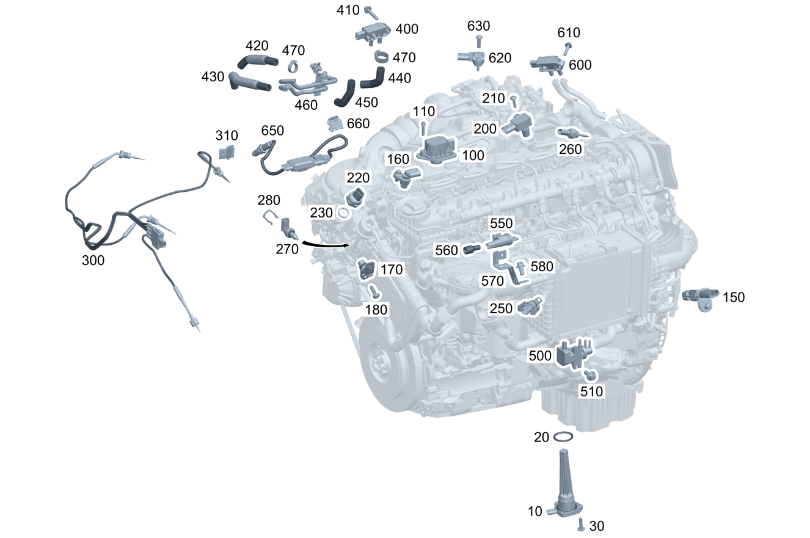

| № | Артикул | Название | Кол. | Примечание | Ограничение |
|---|---|---|---|---|---|
| 10 | A 091 905 94 01 | Датчик уровня (FUELLSTANDSSENSOR) | 1 | Моторное масло | |
| 20 | A 001 997 72 41 | - Уплотнительное кольцо (DICHTRING) | 1 | ||
| 20 | A 000 997 90 26 | - Стопорное кольцо (NUTRING) | 1 | ||
| 30 | N 000000 005236 | Винт с 6-гр. глвк (SECHSRUNDSCHRAUBE) | 3 | M6X22 | |
| 100 | A 656 982 01 00 | Электромагнит (HUBMAGNET) | 3 | A14 | |
| 110 | N 910142 006003 | Винт с 6-гр. глвк (SECHSRUNDSCHRAUBE) | 6 | M6X25 | A14 |
| 150 | A 254 905 01 00 | Датчик положения (POSITIONSSENSOR) | 1 | Коленвал | |
| 160 | A 254 905 05 02 | Датчик положения (POSITIONSSENSOR) | 1 | Распределительный вал | |
| 170 | A 654 905 07 00 | Датчик положения (POSITIONSSENSOR) | 1 | Концевой выключатель перепускной заслонки системы рециркуляции ОГ | 1U2 |
| 180 | N 910143 006000 | Винт с 6-гр. глвк (SECHSRUNDSCHRAUBE) | 1 | M6X12 | 1U2 |
| 200 | A 000 905 70 07 | Датчик давления (DRUCKSENSOR) | 1 | Давление наддува | |
| 210 | N 000000 002179 | - Винт с 6-гр. глвк (SECHSRUNDSCHRAUBE) | 1 | Датчик к турбокомпрессору | |
| 220 | A 000 905 30 07 | Датчик давления (DRUCKSENSOR) | 1 | Противодавление ОГ на клапане рецирк. ОГ | |
| 230 | N 007603 012100 | Уплотнительное кольцо (DICHTRING) | 1 | 12X16\-AL | |
| 250 | A 651 153 00 28 | Датчик температуры (TEMPERATURSENSOR) | 1 | Охладитель наддувочного воздуха | |
| 260 | A 000 905 55 02 | Датчик температуры (TEMPERATURSENSOR) | 1 | Система рецирк. ОГ низкого давления | |
| 270 | A 000 905 61 02 | Датчик температуры (TEMPERATURSENSOR) | 1 | К головке блока цилиндров | |
| 280 | A 008 988 91 78 | Скоба (KLAMMER) | 1 | ||
| 300 | A 000 905 71 16 | Датчик температуры | 1 | Температура ОГ T3, T4, T5 | 1U2 |
| 300 | A 000 905 76 23 | Датчик температуры | 1 | Температура ОГ T3, T4, T5 | 1U2/1U8 |
| 300 | A 000 905 82 15 | Датчик температуры (TEMPERATURSENSOR) | 1 | Температура ОГ T3, T4, T5 | |
| 300 | A 000 905 06 18 | Датчик температуры (TEMPERATURSENSOR) | 1 | Температура ОГ T3, T4, T5 | |
| 300 | A 000 905 46 23 | Датчик температуры (TEMPERATURSENSOR) | 1 | Температура ОГ T3, T4, T5 | |
| 310 | A 000 541 04 00 | Держатель (HALTER) | 1 | ||
| 400 | A 000 905 73 13 | Датчик давления (DRUCKSENSOR) | 1 | Дифф.давление дизельного сажевого фильтра | |
| 410 | N 910143 006004 | Винт с 6-гр. глвк (SECHSRUNDSCHRAUBE) | 1 | M6X30 | |
| 420 | A 656 142 11 00 | Шланг выпускной системы (ABGASSCHLAUCH) | 1 | Перед сажевым фильтром | |
| 420 | A 656 142 44 00 | Шланг выпускной системы (ABGASSCHLAUCH) | 1 | Перед сажевым фильтром | 1U2/1U8 |
| 430 | A 656 142 12 00 | Шланг выпускной системы (ABGASSCHLAUCH) | 1 | После сажевого фильтра | |
| 430 | A 656 142 45 00 | Шланг выпускной системы (ABGASSCHLAUCH) | 1 | После сажевого фильтра | 1U2/1U8 |
| 440 | A 656 142 13 00 | Шланг выпускной системы (ABGASSCHLAUCH) | 1 | Перед сажевым фильтром | |
| 450 | A 656 142 38 00 | Шланг выпускной системы (ABGASSCHLAUCH) | 1 | После сажевого фильтра | |
| 460 | A 656 140 49 01 | Напорный трубопровод (DRUCKLEITUNG) | 1 | ||
| 460 | A 656 140 59 01 | Напорный трубопровод | 1 | ||
| 460 | A 656 140 59 01 | Напорный трубопровод | 1 | 1U2/1U8 | |
| 460 | A 656 140 91 01 | Напорный трубопровод (DRUCKLEITUNG) | 1 | 1U2/1U8 | |
| 470 | A 003 997 87 90 | Хомут для шланга (SCHLAUCHSCHELLE) | 6 | 13.5 MM | |
| 500 | A 000 153 13 00 | Преобразователь давления (DRUCKWANDLER) | 1 | Сервомех\-зм регул.давления наддува Перепускн.клапан | |
| 500 | A 000 153 26 00 | Преобразователь давления (DRUCKWANDLER) | 1 | Сервомех\-зм регул.давления наддува Перепускн.клапан | |
| 500 | A 000 153 33 00 | Преобразователь давления (DRUCKWANDLER) | 1 | Сервомех\-зм регул.давления наддува Перепускн.клапан | |
| 500 | A 000 153 33 00 | Преобразователь давления (DRUCKWANDLER) | 1 | Сервомех\-зм регул.давления наддува Перепускн.клапан | |
| 500 | A 000 153 33 00 | Преобразователь давления (DRUCKWANDLER) | 1 | Сервомех\-зм регул.давления наддува Перепускн.клапан | 1U2 |
| 500 | A 000 153 13 00 | Преобразователь давления (DRUCKWANDLER) | 1 | Заслонка регул. давления наддува | |
| 500 | A 000 153 26 00 | Преобразователь давления (DRUCKWANDLER) | 1 | Заслонка регул. давления наддува | |
| 500 | A 000 153 33 00 | Преобразователь давления (DRUCKWANDLER) | 1 | Заслонка регул. давления наддува | |
| 500 | A 000 153 33 00 | Преобразователь давления (DRUCKWANDLER) | 1 | Заслонка регул. давления наддува | 1U2 |
| 510 | N 000000 006648 | Винт с 6-гр. глвк (SECHSRUNDSCHRAUBE) | 4 | M6X14 | |
| 550 | A 000 500 32 01 | Переключающий клапан (UMSCHALTVENTIL) | 1 | Перепускная заслонка охладителя системы рециркуляции ОГ | |
| 560 | A 117 078 09 81 | Сетчатый фильтр (SIEBEINSATZ) | 1 | ||
| 570 | A 656 078 27 00 | Держатель (HALTER) | 1 | ||
| 580 | N 910143 006000 | Винт с 6-гр. глвк (SECHSRUNDSCHRAUBE) | 1 | Держатель на вакуумном ресивере; M6X12 | |
| 600 | A 000 905 74 13 | Датчик давления (DRUCKSENSOR) | 1 | Дифф.давление сист.рецирк. ОГ низк.давления | |
| 610 | N 000000 003648 | Винт с 6-гр. глвк (SECHSRUNDSCHRAUBE) | 1 | Дифференциальный датчик на патрубке подачи очищенного воздуха; M6X25 | |
| 620 | A 000 905 88 16 | Датчик давления (DRUCKSENSOR) | 1 | Датчик давления и температуры крышки клапанного механизма | 1U2 |
| 620 | A 000 905 88 16 | Датчик давления (DRUCKSENSOR) | 1 | Датчик давления и температуры крышки клапанного механизма | 1U8 |
| 630 | N 000000 002179 | - Винт с 6-гр. глвк (SECHSRUNDSCHRAUBE) | 1 | Датчик давления на крышке клапанного механизма | 1U2/1U8 |
| 650 | A 000 905 80 21 | Датчик NOx (NOX-SENSOR) | 1 | 1U2/1U8 | |
| 650 | A 000 905 80 21 | Датчик NOx (NOX-SENSOR) | 1 | 1U2 | |
| 650 | A 000 905 93 25 | Датчик NOx | 1 | 1U2+941 | |
| 660 | A 000 991 02 71 | Скоба (KLAMMER) | 3 | 18X19 MM | 1U2/1U8 |
Позиций: 60 · подписано на схемах: 60 · колесо — плавный зум в курсор, перетаскивание — пан, двойной клик — зум, клик по артикулу — скопировать.